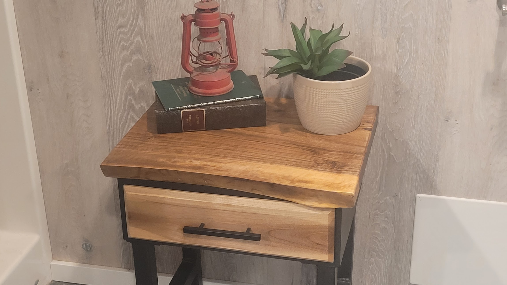
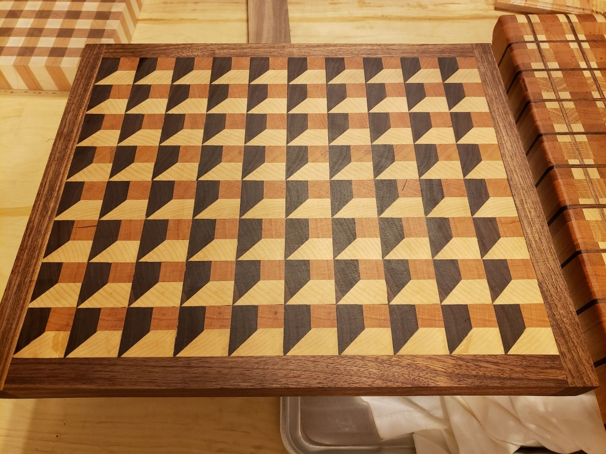
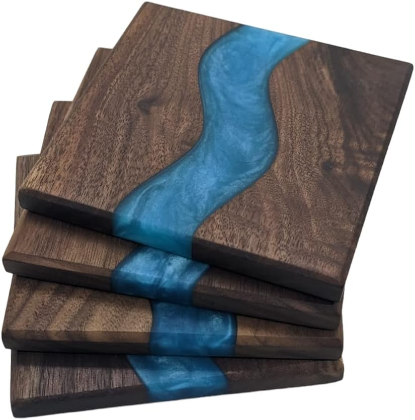
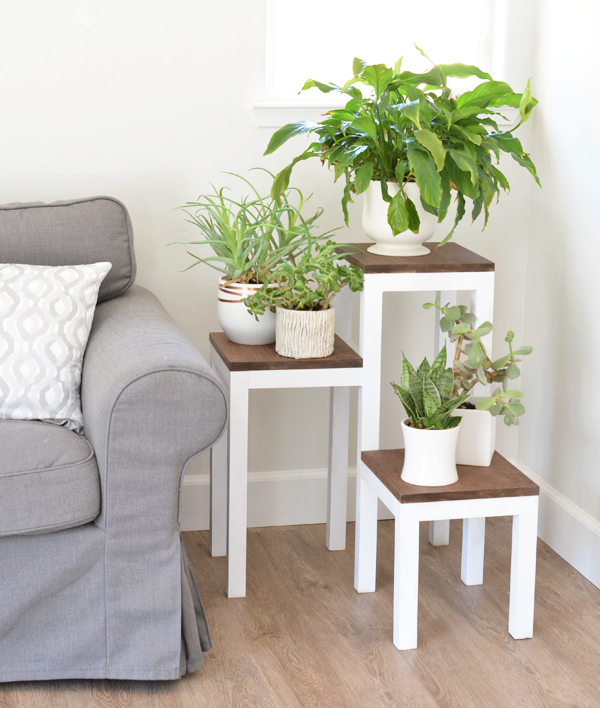
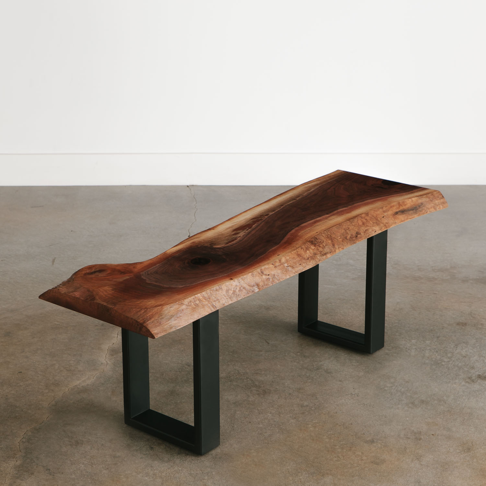

Featured: Live Edge Walnut End Table

These peices are made from a highly figured peices of walnut.
Their front faces are live edge, showing off the natural beauty
of the wood. These slabs sit on a sturdy bases with sizable
drawers that are faced with more walnut from the same tree.
Everything sits on house made 1 1/2 inch square steel legs that
give the end tables more strength then they will ever need,
well over 300 pounds can comfortably sit on the top without
stressing the peice at all. Overall its industrial design leaves
it, not only functional, but beautiful.
End Grain Cutting Boards

Serving Trays

Desks/Tables

Coasters

Plant Stands

Benches
